Breaking news · 30 agosto 2026 · Falcon Heavy / telescopio Roman. Lancio riuscito da LC-39A, osservatorio in crociera verso L2. Lettura su fonti pubbliche, non comunicato NASA o SpaceX.
Domenica mattina, pad 39A, finestra istantanea. Ventisette Merlin accesi, due booster a terra sette minuti dopo, telescopio sganciato alle 7:57 EDT. Il tredicesimo Falcon Heavy consegna il flagship NASA da 4,3 miliardi verso il punto di Lagrange L2.
Dossier · non ufficiale · 30 agosto 2026 · fonti: NASA Roman blog, SpaceX su X, conferenza pre-lancio, Launch Services Program
Il bollettino di queste ore
Il 30 agosto 2026, alle 7:26 del mattino sulla costa atlantica della Florida, un Falcon Heavy lascia Launch Complex 39A con a bordo il Nancy Grace Roman Space Telescope. Non e' un lancio Starlink. Non e' un volo di rifornimento verso la Stazione. E' il terzo grande osservatorio NASA della generazione Hubble-Webb-Roman, e il razzo che lo porta e' lo stesso tre-core che nel 2018 ha messo una Tesla in orbita eliocentrica. Stavolta il carico vale circa 4,3 miliardi di dollari di programma, pesa quanto un Tyrannosaurus rex e deve arrivare a un milione e mezzo di chilometri dalla Terra.
La finestra e' istantanea: o si parte a T-0, o si slitta a lunedi alle 7:22 EDT. Il 45th Weather Squadron, nella decina di minuti prima del decollo, alza il “go” meteo al 70 percento. Il cielo sul Cape e' parzialmente nuvoloso, non abbastanza da fermare i 27 Merlin. La NASA fissa il liftoff alle 7:26 EDT, 11:26 UTC, 13:26 ora italiana. SpaceX, sul conto ufficiale, scrive una riga che chiude otto anni di Falcon Heavy: “Falcon Heavy lifts off from pad 39A in Florida for the 13th time!”
Sette minuti e quaranta secondi dopo il decollo i due booster laterali atterrano a Cape Canaveral: uno su Landing Zone 2, l'altro su Landing Zone 40. NASA lo conferma nel bollettino di ascesa: un laterale e' al primo volo, l'altro al terzo, dopo GOES-U e Viasat-3 F3. Il core centrale non torna. Viene speso di proposito, perche' Roman chiede energia cinetica verso L2, non un atterraggio in mare. Poco dopo le 7:57 EDT l'osservatorio si stacca dal secondo stadio. Un minuto prima ha gia' parlato con un satellite TDRS della NASA. Alle 8:09 EDT l'agenzia chiude la copertura live del lancio: razzo riuscito, carico sganciato, crociera iniziata.
Questa pagina fissa il passaggio. Da manifesto a traiettoria. Da telescopio in fairing a osservatorio in volo autonomo. Quello che segue non e' il comunicato del Launch Services Program. E' la lettura di un lancio che conta due volte: per quello che Falcon Heavy e' diventato come macchina scientifica, e per quello che Roman potra' misurare quando, tra circa tre mesi di commissioning, aprira' l'otturatore su un campo cento volte piu' largo di Hubble.
13° Heavytutti i voli Falcon Heavy dal 2018 a oggi chiusi con successo
27 Merlinoltre 5 milioni di libbre di spinta, ~22.800 kN al decollo
7:57 EDTRoman si stacca dal secondo stadio e vola da solo
L2stesso quartiere gravitazionale di James Webb, un milione di miglia dalla Terra
I clip di SpaceX, da X
Il documento primario del lancio, per chi guarda da terra, non e' un PDF del Launch Services Program. Sono quattro post SpaceX in meno di ventiquattr'ore, tutti con video in 4K. La vigilia: il tre-core verticale su 39A. Due ore al T-0: pad, fari, vapore. Poi il decollo. Poi la conferma di sgancio. Qui sotto stanno le copie locali. I post originali restano la fonte.
Un minuto dopo SpaceX aggiunge la geografia della missione, che e' il vero motivo per cui questo razzo e' volato in configurazione parzialmente consumabile. Roman non resta in orbita bassa. Non va in geostazionaria. Va quattro volte piu' lontano della Luna, nel punto in cui la gravita' del Sole e della Terra si equilibrano abbastanza da tenere un osservatorio in un alone stabile, con il Sole, la Terra e la Luna tutti dalla stessa parte del cielo.
“The telescope will travel to the second Sun-Earth Lagrange point, which is ~one million miles away and about four times farther from Earth than the Moon. At L2, the combined gravity of the Sun and Earth will give Roman a stable vantage point with a clear, unobstructed view to survey deep space and accomplish its mission.”
SpaceX · X · 30 agosto 2026, 12:01 UTC
Cosa e successo, minuto per minuto
La macchina a terra e' quella di sempre, su un pad che ha lanciato Saturn V, Shuttle e Crew Dragon. La differenza, oggi, sta nel profilo. Roman non accetta un ritardo di venti minuti: la geometria verso L2 fissa un T-0, non una finestra larga. Il 21 agosto NASA, SpaceX e il programma Roman chiudono il Flight Readiness Review. Il 25 il fairing esce dal Payload Hazardous Servicing Facility e attraversa Kennedy di notte, verso l'hangar di 39A. Il 29 il tre-core e' verticale. Il 30, alle 6:20 EDT, parte la copertura NASA. Alle 6:30 inizia il carico di RP-1 sul primo stadio. Alle 6:51 tocca al secondo. Alle 7:07 l'ossigeno liquido dell'upper stage. Sette minuti al liftoff, i Merlin vanno in chill.
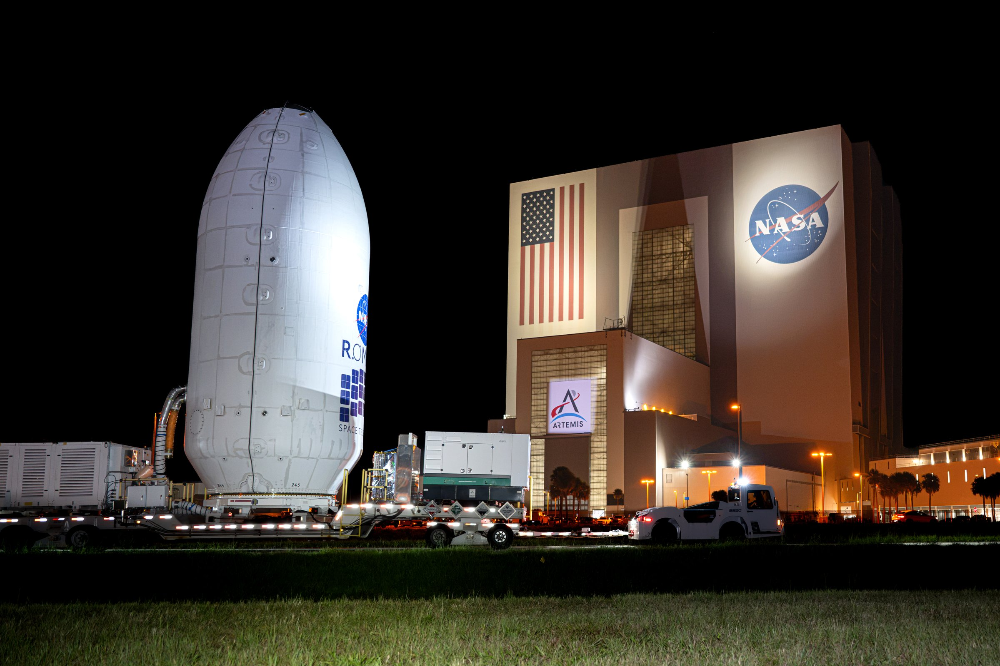
25 agosto 2026: l'osservatorio, gia' chiuso nel fairing, va verso l'hangar di 39A. NASA/Sydney Rohde (Rocz).
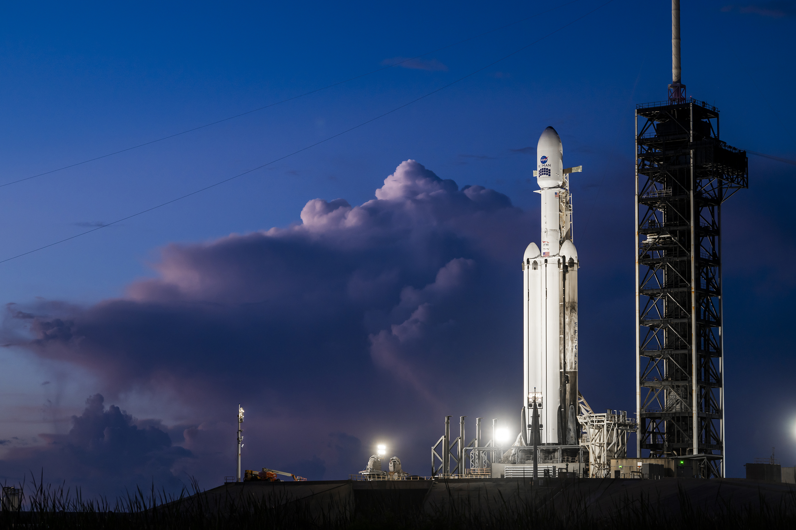
29 agosto: tre core, un fairing, un telescopio da 4,3 miliardi. Foto SpaceX.
Il profilo di ascesa e' quello pubblicato da NASA prima del T-0 e poi confermato, pezzo per pezzo, dai bollettini in volo. Max Q a T+1:08. Spegnimento dei laterali a T+2:24, separazione tre secondi dopo, capovolgimento, boostback. MECO del core centrale a T+3:51, staging, accensione del Merlin Vacuum a T+4:00. Il fairing si apre a T+4:15 e torna verso l'Atlantico, dove la nave Doug e' in stazione per il recupero. I laterali fanno l'entry burn a T+6:19 e atterrano a T+7:40. Il secondo stadio spegne la prima accensione a T+8:28, costa, riaccende a T+24:33, spegne di nuovo a T+26:32. Cinque minuti di costa. Poi lo sgancio, previsto a T+31:31, avvenuto alle 7:57 EDT.
T-0 · 7:26 EDT
Liftoff
27 Merlin, oltre cinque milioni di libbre. Traiettoria est-nordest da 39A. NASA: “Roman Space Telescope launches.”
T+2:24
Laterali via
BECO, separazione, flip, boostback. Il core centrale resta acceso e spinge ancora verso lo spazio.
T+3:51 – 4:15
Staging e fairing
MECO, separazione stadi, SES-1, poi il naso si apre. Roman vede lo spazio per la prima volta.
T+7:40
Due atterraggi
LZ-2 e LZ-40. Un booster al debutto, uno al terzo volo. Il core centrale non torna.
T+26:32
SECO-2
Seconda e ultima accensione dell'upper stage. Roman resta attaccato per altri cinque minuti di costa.
7:57 EDT
Flying on its own
Sgancio confermato. TDRS ha gia' il segnale dalle 7:56. Nelle mezz'ora successive si apre il Solar Array Sun Shield.
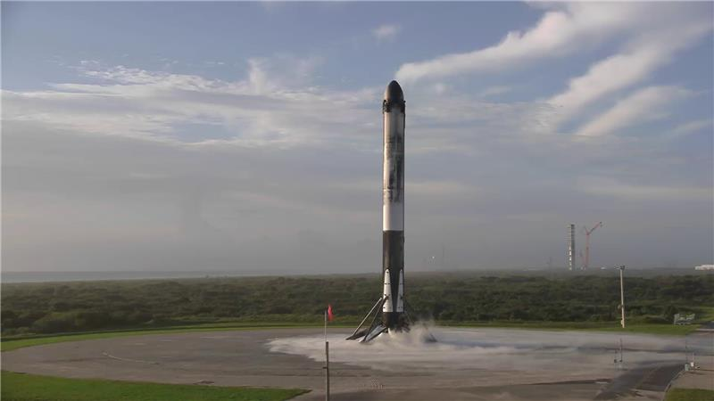
Laterale a terra. Post SpaceX: “side boosters landed on LZ-2 and LZ-40”.
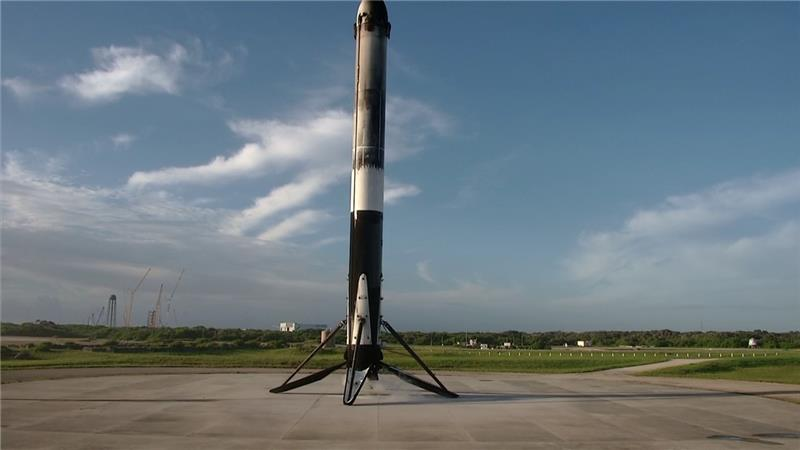
L'altro laterale. Stesso post, 30 agosto 2026, 11:53 UTC.
Il numero di serie del volo, nel conto SpaceX, e' da manifesto di cadenza: 714° lancio complessivo dell'azienda, 105° del 2026, 14° e ultimo del mese, 127° da 39A, 13° Falcon Heavy. I due atterraggi di oggi sono il 19° su LZ-2 e il 6° su LZ-40. Il centro, nuovo, viene bruciato. E' il prezzo della fisica, non un incidente. Un osservatorio da dieci tonnellate verso L2 non lascia abbastanza margine per far tornare anche il core centrale su una barge. I laterali si, e tornano. La scienza, su questo razzo, si compra cosi: due terzi riutilizzati, un terzo speso, un telescopio a un milione di miglia.
Perche' questo razzo e' un atto scientifico
Si tende a separare le due cose. Da una parte il lanciatore, macchina industriale, spinta, costi, recupero. Dall'altra il telescopio, specchio, rivelatori, papers. Oggi le due cose coincidono. Roman esiste come missione flagship solo perche' esiste un razzo civile capace di mettere circa dieci tonnellate su una traiettoria verso L2, dentro un fairing da 5,2 metri, a un prezzo che la NASA puo' firmare senza bruciare il resto del decennio astrofisico. Quel razzo, nel 2026, si chiama Falcon Heavy. Non e' un dettaglio logistico. E' la condizione di possibilita' della scienza che Roman andra' a fare.
Un osservatorio di classe Hubble — specchio da 2,4 metri, barile esterno, sei pannelli che fanno anche da parasole, coronografo, bus, idrazina, antenna — non entra in un lanciatore medio e non arriva a L2 con un Falcon 9. L2 non e' un'orbita bassa. E' un trasferimento che chiede energia specifica alta, la cosiddetta C3, e una iniezione precisa in una finestra che dura zero minuti. Il Delta IV Heavy, che per anni e' stato il cavallo di razza americano per questo tipo di masse e di energie, e' uscito di scena. Lo SLS puo' fare di piu', ma costa un ordine di grandezza in piu' e non e' una macchina da cadenza scientifica. Resta Falcon Heavy: tre core derivati dal Falcon 9, ventisette Merlin a ciclo aperto, un secondo stadio identico a quello del nove, un fairing identico, una rampa, 39A, che SpaceX conosce a memoria.
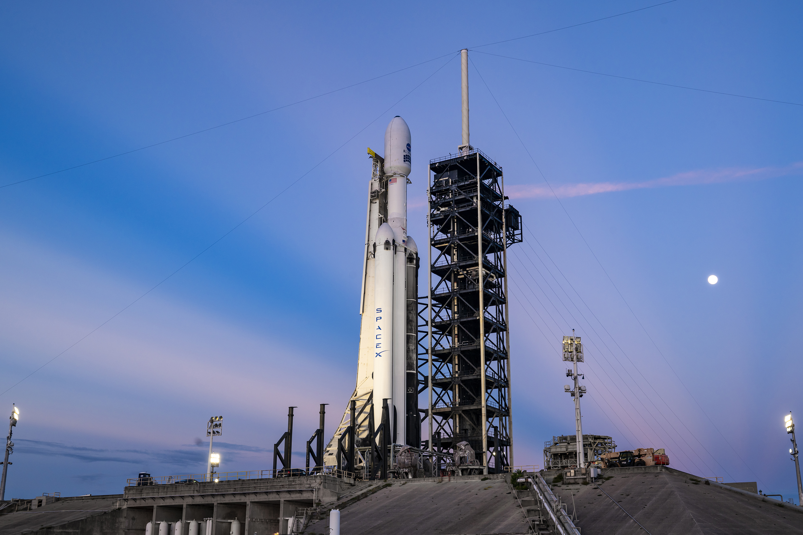
Tre Falcon 9 affiancati, in pratica. Il laterale di sinistra e di destra tornano. Quello di mezzo, oggi, no. Foto SpaceX, 29 agosto.
I numeri del veicolo, quelli che contano per un progettista di missioni, stanno in una tabella corta. Altezza 70 metri, larghezza complessiva 12,2, massa al decollo circa 1.420 tonnellate. Spinta al liftoff intorno ai 22.800 kilonewton, oltre cinque milioni di libbre. In configurazione interamente consumabile il Heavy mette 63,8 tonnellate in orbita bassa, 26,7 in GTO, 16,8 verso Marte. Verso L2, con un carico da 8-10 tonnellate e il vincolo di recuperare i laterali, la configurazione scelta e' quella parzialmente consumabile: i due side booster tornano alla costa, il centro viene lasciato andare. Non e' uno spreco. E' il compromesso che rende la missione volabile a un prezzo da listino commerciale — circa 97 milioni in versione riusabile, nell'ordine dei 150 in versione piu' consumabile — invece che da programma militare o da SLS.
La NASA ha scelto questa macchina non oggi, ma anni fa, quando il Launch Services Program ha messo Roman su Falcon Heavy. Da allora il razzo ha smesso di essere una curiosita' da primo volo con Roadster e ha iniziato a fare il lavoro sporco della scienza planetaria e dell'osservazione terrestre. Psyche verso un asteroide ricco di metallo. Europa Clipper verso Giove. GOES-U in trasferimento per la NOAA. Oggi Roman. SpaceX, la mattina del lancio, lo scrive in chiaro: la famiglia Falcon ha permesso alla NASA di arrivare piu' lontano e di esplorare di piu'. PACE e SPHEREx sono andati su Falcon 9. I carichi che pesano e che devono uscire dalla buca gravitazionale terrestre con decisione passano dal Heavy.
“Falcon Heavy sent Psyche toward a metal-rich asteroid, Europa Clipper to Jupiter’s Moon, and GOES-U into transfer orbit to improve NOAA’s weather forecasting. Falcon 9 launched NASA’s PACE mission to study Earth’s ocean and atmosphere and SPHEREx to map the history of the universe. The Falcon family has enabled NASA to reach farther and explore more of the universe, and missions like Roman continue that work.”
SpaceX · X · 30 agosto 2026, 10:29 UTC
C'e' un punto, qui, che va detto senza enfasi da conferenza. Un telescopio non produce scienza se non arriva intero, nella giusta orbita, con la giusta velocita', dentro i limiti di shock, vibrazione e contaminazione che gli strumenti accettano. Il lanciatore e' il primo strumento della missione. Decide se lo specchio da 2,4 metri, che pesa 186 chili grazie a una metallurgia che Hubble non aveva, sopravvive a Max Q. Decide se il coronografo, che deve spegnere la luce di una stella di un fattore un miliardo, non si disallinea per un transitorio di carico. Decide se i 18 rivelatori H4RG-10 da 4.096 pixel di lato arrivano a L2 con la catena termica intatta. Il fairing da 13 metri non e' un cofano. E' la prima camera bianca dello spazio, tenuta in ambiente controllato fino a T+4:15.
La riutilizzabilita', su questo volo, non e' uno slogan. E' un bilancio. Recuperare i laterali su LZ-2 e LZ-40 costa propellente e massa che non vanno al carico. Spendere il centro restituisce quella massa in velocita'. Il risultato e' un osservatorio in trasferimento e due booster pronti a volare di nuovo. E' la stessa logica che ha reso Falcon 9 la macchina da cadenza della NASA commerciale, applicata al piano superiore della scala. Senza quella scala, Roman restava un disegno da Decadal Survey. Con quella scala, decolla nove mesi prima dell'impegno formale di maggio 2027, un fatto raro per un flagship da 4,3 miliardi.
C'e' anche una geografia. 39A e' il pad Apollo, il pad Shuttle, il pad Crew. Non e' un dettaglio da cartolina. Un trasferimento verso L2 da Cape Canaveral esce verso est, sull'Atlantico, con un azimuth che la range della Space Launch Delta 45 conosce. I due atterraggi odierni, simultanei, sono il pezzo visibile di quella geografia: boom sonici sulla costa, due colonne di vapore, due macchine da nove Merlin che si posano a pochi chilometri dal punto da cui sono partite. Il centro, invece, continua. E' lui, con l'upper stage, a fare il lavoro scientifico del lanciatore: dare a Roman l'energia che un Falcon 9 non ha.
La tesi di questa pagina e' secca. Falcon Heavy non e' il telescopio. Ma senza un heavy-lift civile, riusabile in parte, pagabile con un contratto LSP, Roman non sarebbe in crociera oggi. L'importanza scientifica del lanciatore sta qui: ha reso un osservatorio di classe Hubble, ottimizzato per i survey, un oggetto che si lancia di domenica mattina invece che un programma che aspetta il prossimo decennio.
Pezzo
Ruolo oggi
Perche' conta per la scienza
27 Merlin 1D
Spinta al liftoff, RP-1/LOX, ciclo aperto
Portano fuori atmosfera uno specchio Hubble-class e due strumenti senza un razzo di Stato
Due laterali
Recuperati su LZ-2 e LZ-40
Riutilizzo: il costo del prossimo flagship non include due core nuovi
Core centrale
Speso
Energia extra verso L2. Senza questo sacrificio, il profilo non chiude
Secondo stadio MVac
Due accensioni, poi sgancio
Iniezione precisa su trasferimento L2, finestra istantanea
Fairing 5,2 × 13 m
Aperto a T+4:15, recupero su Doug
Volume e pulizia per un OTA da 2,4 m, SASS e coronografo
Cosa c'e' dentro il fairing
Nancy Grace Roman e' stata la prima capo astronomo della NASA. Il telescopio che porta il suo nome e' il successore concettuale di WFIRST, il Wide-Field Infrared Survey Telescope uscito dalla Decadal Survey. Non e' un Hubble 2. Non e' un Webb 2. E' lo strumento che Hubble e Webb non sono: un grandangolo infrarosso con la nitidezza di Hubble e un campo cento volte piu' largo, capace di mappare il cielo fino a mille volte piu' in fretta. NASA lo ripete da anni con una metafora da ottica fotografica: Webb e' lo zoom, Roman e' il grandangolo. Hubble resta il multiuso, anche ultravioletto, che inquadra il dettaglio. I tre insieme coprono la scala che un solo osservatorio non copre.
Le dimensioni, a terra, sono da pullman. Piu' di 12,7 metri di lunghezza, piu' di 4,4 di larghezza a schermi aperti, circa 8.200 chili a secco, oltre 9.000 da rifornito — Nicky Fox, nella conferenza del 29 agosto, ha usato l'immagine che ha fatto il giro delle cronache: grande come un tour bus, pesa come un T-Rex. Lo specchio primario ha lo stesso diametro di Hubble, 2,4 metri, ma pesa 186 chili: la metallurgia e le nervature posteriori non sono quelle degli anni Ottanta. L3Harris ha costruito l'assemblaggio ottico. Goddard ha integrato l'osservatorio. JPL ha fatto il coronografo. Il programma, sviluppo, lancio e operazioni comprese, sta intorno ai 4,3 miliardi di dollari. Arrivare al pad nove mesi prima dell'impegno di maggio 2027 e' il dato industriale che NASA ha tenuto a sottolineare in ogni briefing.
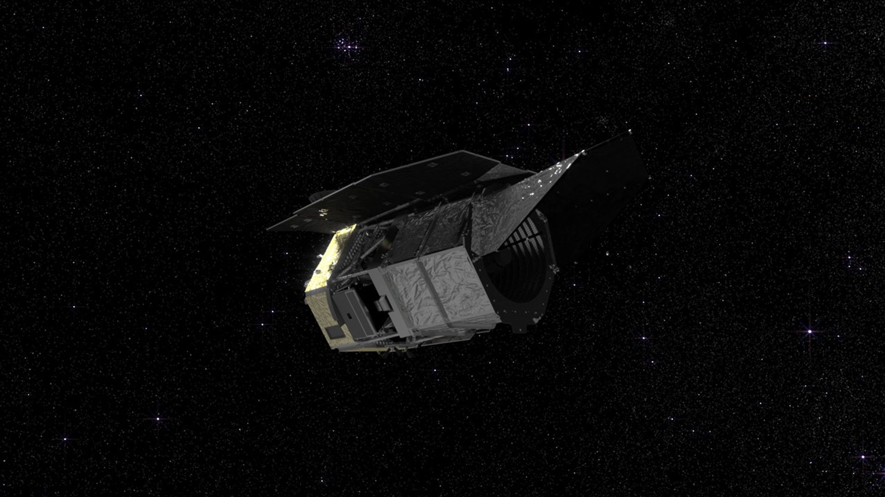
Concept NASA Goddard / Conceptual Image Lab: barile esagonale, sei pannelli-parasole, antenna, bus. L'oggetto che oggi e' in crociera verso L2.
Roman osserva dall'ottico rosso all'infrarosso vicino, 0,48-2,3 micron. Lo specchio lavora intorno ai -7 °C. Il barile esterno, nero all'interno e con baffles, tiene fuori la luce diffusa del Sole, della Terra e della Luna: a L2 quei tre corpi stanno tutti dalla stessa parte, e il parasole puo' fare il suo lavoro senza i contorcimenti termici di un'orbita bassa. I sei pannelli del Solar Array Sun Shield danno circa quattro kilowatt e fanno da scudo termico. Subito dopo lo sgancio i quattro pannelli esterni si aprono e completano l'array. Poi, nei giorni successivi, tocca all'antenna e al Deployable Aperture Cover, la visiera che protegge lo specchio in ascesa e poi diventa un ulteriore oscuramento.
La missione nominale dura cinque anni, con un obiettivo a dieci. I dati sono aperti al cento per cento. Il ritmo di discesa e' da altro decennio: circa 4 petabyte all'anno, 20 in cinque anni, l'equivalente — nel factsheet ESA — di dieci milioni di film in alta definizione. Near Space Network per la scienza ad alto bitrate, Deep Space Network per il tracking fine, stazioni ESA a New Norcia e JAXA a Misasa in appoggio. Non e' un telescopio che manda una cartolina al mese. E' una macchina da survey che, se il commissioning regge, inondera' l'astrofisica di cataloghi.
“Everyone is really excited about this launch – and why? Because the Nancy Grace Space Telescope will blow your mind. It is the size of a tour bus and it weighs the same as a T-Rex.”
Nicky Fox, associate administrator NASA Science · briefing del 29 agosto 2026
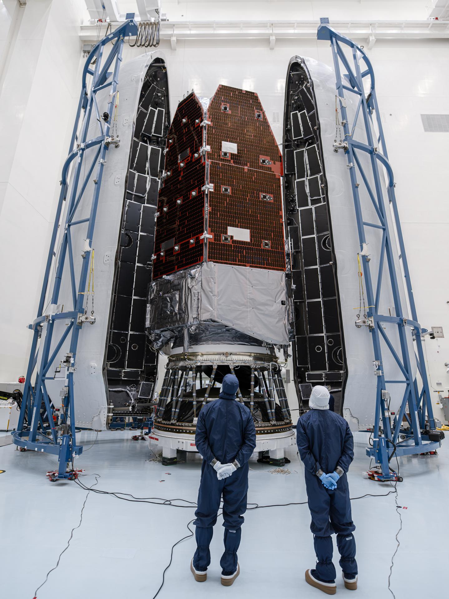
PHSF, Kennedy: Roman gia' nel fairing da 13 metri. NASA, 21 agosto circa.
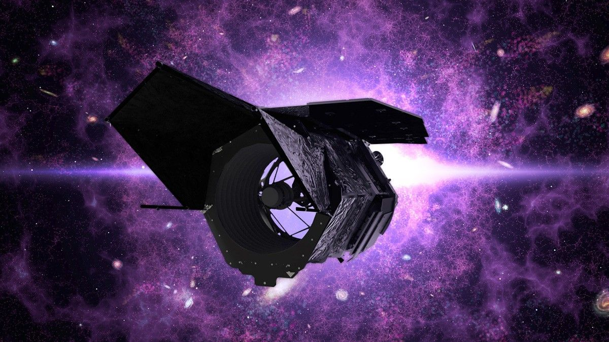
Visualizzazione NASA dell'osservatorio a piena apertura. Public domain.
Due strumenti, due mestieri
Roman porta due strumenti. Il primo e' il lavoro. Il secondo e' il futuro. Il Wide Field Instrument e' una camera visibile-infrarossa da 300,8 megapixel: 18 rivelatori Teledyne H4RG-10, ciascuno 4.096 per 4.096 pixel in tellururo di cadmio e mercurio, disposti in una mosaico 6 per 3. Il campo e' 0,281 gradi quadrati, circa cento volte Hubble in imaging, duecento volte il WFC3/IR. La risoluzione angolare e' 0,1 secondi d'arco, la stessa nitidezza che ha reso Hubble il telescopio della cultura popolare. La differenza e' che Roman, in una posa, copre un pezzo di cielo grande come la Luna piena. Hubble, nella stessa posa, copre un francobollo.
Il WFI fa imaging e spettroscopia a fenditura assente, con prisma e grism. La ruota elementi ha undici posizioni: filtri, dispersori, un elemento DARK per la calibrazione. Le bande vanno dal rosso al vicino infrarosso. Il risultato pratico e' una velocita' di survey fino a mille volte quella di Hubble a parita' di profondita'. Non e' un modo di dire da brochure. E' il motivo per cui Roman puo' misurare le forme di centinaia di milioni di galassie per il weak lensing, spettroscopare decine di milioni di redshift per le oscillazioni barioniche, e contemporaneamente stare fermo per mesi sul bulge galattico a caccia di microlensing.
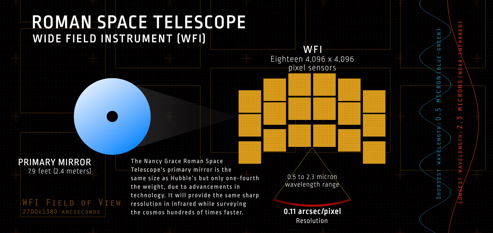
WFI in infografica NASA GSFC (SVS 13583). Stessa nitidezza di Hubble, campo enorme. Public domain.
Il Coronagraph Instrument, costruito da JPL, e' un dimostratore tecnologico, non lo strumento primario della missione. Serve a provare in volo quello che i coronografi a terra e i primi tentativi spaziali non hanno ancora fatto: spegnere la luce di una stella di un fattore cento milioni, fino al miliardo dopo il post-processing, e vedere il pianeta che le gira intorno in luce riflessa. Maschere, specchi deformabili con migliaia di attuatori, ottica adattiva in spazio, polarimetria, spettroscopia a fenditura. Il contrasto richiesto e' almeno 10-7, l'obiettivo di lavoro sta tra 10-8 e 10-9. Se tiene, Roman puo' fotografare mondi delle dimensioni di Giove su orbite delle dimensioni di Giove, vecchi e freddi, non solo i giovani caldi che gia' si vedono in infrarosso. Se tiene, il passo successivo ha un nome: Habitable Worlds Observatory. Il CGI e' il banco prova.
I due mestieri non si calpestano. Il WFI mappa. Il CGI dimostra. Il primo produce i cataloghi su cui lavorera' una generazione. Il secondo prova che si puo' spegnere una stella abbastanza da cercare, un giorno, una Terra. NASA lo ha tenuto come technology demonstration proprio per non far dipendere i requisiti di missione da un contrasto che nessuno ha ancora ottenuto in orbita. E' onesto. E' anche, se funziona, il pezzo che i libri di storia ricorderanno accanto alle mappe di dark energy.
Tre domande, un cielo intero
Roman nasce per tre problemi. Cos'e' l'energia oscura, o se invece e' la gravita' che a scale cosmologiche non e' piu' Einstein. Quanti pianeti ci sono, di che massa, a che distanza dalle stelle, compresi quelli che non transiscono e quelli che non hanno piu' una stella. E tutto il resto: galassie all'epoca della reionizzazione, buchi neri, transienti, oggetti del Sistema solare esterno, la Via Lattea come censimento. I Core Community Surveys — High Latitude Wide Area, High Latitude Time Domain, Galactic Bulge Time Domain — occupano la maggior parte dei cinque anni. Il resto e' tempo da investigator, aperto.
L'energia oscura si misura in tre modi indipendenti, ed e' questo il punto di forza. Primo: weak gravitational lensing. La materia, anche quella che non brilla, deforma in modo statistico le forme di centinaia di milioni di galassie. Roman, sul High Latitude Wide Area Survey, copre circa 5.000 gradi quadrati, il 12 percento del cielo, in poco piu' di un anno e mezzo di tempo di telescopio. Circa 600 milioni di galassie saranno abbastanza risolte da misurare quelle distorsioni. Si ottiene una mappa 3D della crescita di struttura dal Big Bang a oggi. Secondo: baryon acoustic oscillations, le oscillazioni acustiche del plasma primordiale impresse nella distribuzione delle galassie. Il grism del WFI deve consegnare dell'ordine di 19 milioni di redshift, di cui circa 9,3 milioni tra redshift 1 e 2. Terzo: supernove Ia, il metro a nastro cosmico. Il High Latitude Time Domain Survey guarda campi nell'emisfero nord e sud a cadenza di pochi giorni, per due anni nel cuore della missione, e caccia supernove da redshift 0,5 a oltre 2,5. Tre tecniche, un telescopio, un fattore dieci di miglioramento sulla precisione rispetto alle misure attuali. L'obiettivo dichiarato e' distinguere un'energia oscura costante — la costante cosmologica di Einstein, il vuoto che spinge — da un campo che evolve, o da una modifica della relativita' generale.
Il microlensing e' l'altra rivoluzione silenziosa. Kepler e TESS hanno riempito il catalogo di pianeti in transito, grandi, vicini alle stelle. Restano i freddi, i lontani, i marziani oltre la snow line, i pianeti liberi senza stella. Roman punta il bulge, cento milioni di stelle, per centinaia di giorni, e aspetta che una massa in primo piano ingrandisca per ore o giorni una stella sullo sfondo. Un pianeta sul bordo di quella lente fa un secondo bagliore, breve, misurabile. La previsione di missione e' circa 2.500 pianeti da microlensing, con una frazione importante di rocciosi nella zona dove l'acqua puo' essere liquida o oltre. Altri lavori parlano di 100.000 nuovi transiti come prodotto collaterale. Insieme, e' il censimento che manca: non i pianeti facili da trovare, tutti i pianeti.
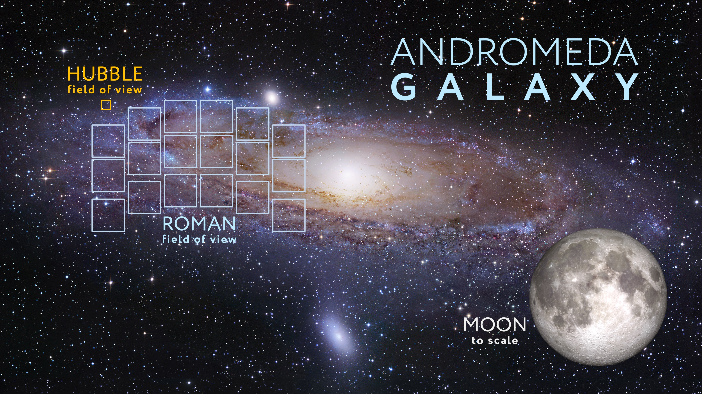
Andromeda come metro. Griglia Roman, quadratino Hubble, Luna in scala. NASA SVS 15070. Sfondo: DSS / R. Gendler.
Il coronografo entra qui come terza gamba, se il dimostratore tiene. Vedere un Giove freddo in luce riflessa non e' un poster. E' lo spettro di un'atmosfera, la polarizzazione di un disco, la prova che lo strumento con cui un giorno si cerchera' una biosignatura puo' volare. JPL ha messo su Roman specchi deformabili e rivelatori a conteggio di fotoni proprio per questo. Il contrasto, se arriva al miliardo a uno, e' cento o mille volte meglio di qualsiasi coronografo spaziale precedente. Non e' ancora una Terra. E' il gradino senza il quale la Terra resta un disegno su un whiteboard.
C'e' poi il cielo di tutti. Un survey da 5.000 gradi quadrati a profondita' Hubble non e' solo dark energy. Sono ammassi, merging, buchi neri lontani 13 miliardi di anni, stelle risolte nelle galassie vicine, asteroidi e oggetti transnettuniani che passano nei campi. Roman, ha detto NASA in briefing, campionera' un volume tale che i cinque anni offriranno “practically limitless opportunities” oltre i tre obiettivi di missione. E' il modo educato per dire: non sappiamo ancora che cosa troveremo, e questo e' il punto.
Una posa di Roman vale cento pose di Hubble. Cinque anni di Roman coprono cinquanta volte il cielo che Hubble ha coperto in trent'anni. I numeri sono di NASA Goddard, non di questa pagina. La conseguenza e' statistica: i fenomeni rari diventano comuni, i comuni diventano mappe, le mappe diventano fisica.
Hubble, Webb, Roman: tre occhi, un decennio
La tentazione, in ogni lancio di telescopio, e' dire che “sostituisce Hubble”. Roman non lo fa. Hubble vede anche ultravioletto, ha strumenti specializzati sul singolo oggetto, e nel 2026 vola ancora. Webb vede piu' lontano in infrarosso, con uno specchio da 6,5 metri e una sensibilita' che Roman non ha, ma su un campo stretto. Roman prende il pezzo che a Hubble e Webb manca: la statistica. Il grandangolo. Il catalogo. NASA, nel blog di questa mattina, lo ha scritto con la frase che conviene lasciare cosi: Roman e Webb guardano l'universo in modi diversi e complementari, come un grandangolo e uno zoom. Roman trova l'oggetto raro e il contesto. Webb ci entra dentro.
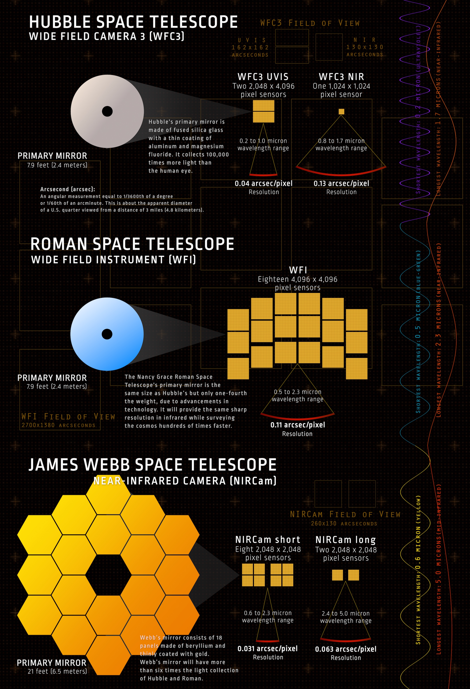
Hubble, Roman, Webb. Stessa famiglia flagship, mestieri diversi. NASA GSFC, SVS 13583.
La complementarita' non e' solo ottica. E' operativa. Hubble e' in bassa orbita, manutenuto dagli Shuttle finche' gli Shuttle c'erano, poi lasciato a invecchiare con eleganza. Webb e Roman stanno a L2, fuori dalla buca termica terrestre, con il Sole sempre alle spalle del parasole. Webb e' arrivato a L2 su un Ariane 5 europeo, in una delle ultime grandi missioni di quel razzo. Roman arriva su un Falcon Heavy americano, in una delle prime grandi missioni scientifiche di questo razzo. Il passaggio di testimone, se si guarda il lanciatore e non solo lo specchio, e' il passaggio da un'Europa che vendeva heavy-lift civile a un'America che lo ha rimesso in produzione industriale. Non e' nazionalismo. E' la ragione per cui oggi, 30 agosto, un flagship NASA decolla da 39A a cadenza SpaceX.
C'e' un quarto occhio, a terra, che va nominato. Vera Rubin, in Cile, sta aprendo il Time Domain della volta celeste ottica. Euclid, europeo, e' gia' a L2 a fare dark energy in visibile. Roman arriva sull'infrarosso vicino, con risoluzione spaziale da spazio, e chiude il triangolo. I dataset si parleranno. I debol lensing di Euclid e Roman si controlleranno a vicenda. I transienti di Rubin troveranno lo spettro in Roman. I target strani finiranno su Webb. E' l'architettura della Decadal, non un caso.
Adesso comincia il viaggio lungo
Lo sgancio di stamattina non e' l'arrivo. Roman ha circa tre mesi di commissioning: aperture, accensioni, calibrazioni, test. Il Solar Array Sun Shield si e' aperto, o si sta aprendo, nella mezz'ora dopo la separazione. Poi l'antenna dual-band, poi la visiera. L'osservatorio usa poca spinta per inserirsi nell'alone di L2: a un milione e mezzo di chilometri la gravita' combinata tiene, e i motori servono a restare nel punto giusto, non a spingere come un interplanetario. La stabilita' termica di L2, scrive NASA, vale un miglioramento di un ordine di grandezza su buona parte dei dati rispetto a Hubble in bassa orbita. E' per questo che si spende un core Falcon Heavy invece di lasciare Roman a 500 chilometri dalla Terra.
Le prime immagini di scienza, se la macchina tiene, sono attese per l'inizio del 2027. Non e' una data da manifesto di lancio, e' una stima da briefing. Prima arrivano i campi di prova, le flat, i dark, il confronto con Hubble sugli stessi pezzi di cielo. Poi i Core Surveys. Poi, se il CGI dimostra il contrasto, le prime pose dirette di pianeti. Il Deep Space Network continuera' a dire dove sta Roman. Il Near Space Network scarichera' i petabyte. ESA e JAXA faranno da orecchie extra. E' un osservatorio internazionale nel downlink, americano nel pad, industriale nel razzo.
Cosa puo' ancora rompersi. Il commissioning di un flagship e' pieno di cose che a terra non si vedono: un pannello che non si apre del tutto, un rivelatore che fa rumore, un coronografo che non arriva al contrasto, un bus che consuma idrazina piu' del budget. Niente di tutto questo e' successo stamattina, e niente di tutto questo si puo' escludere da questa pagina. Il lancio e' la condizione necessaria. Non e' la scienza. La scienza inizia quando il WFI, a L2, fa la prima mappa che Hubble avrebbe impiegato mesi a coprire.
Questa breaking news fissa il 30 agosto: da 39A a traiettoria L2, da fairing a osservatorio autonomo, da manifesto a volo. Il cantiere della scienza, quando partira', sara' un'altra pagina. Starbase Louisiana, che ieri era in evidenza su questa stessa porta SpaceX, resta in archivio: il spaceport da cento miliardi non vola oggi. Oggi vola un telescopio.
Nel corpo si descrive lo stato e si citano le dichiarazioni primarie. Qui stanno i link. I numeri di booster e le statistiche di cadenza arrivano dai manifesti di volo pubblici; i tempi di ascesa e lo sgancio dai bollettini NASA Roman del 30 agosto.
Rivoluzione Spaziale. Breaking news · 30 agosto 2026. Video e foto SpaceX dai post ufficiali su X; foto e infografiche NASA in public domain. Non e' un comunicato NASA o SpaceX riedito: lettura editoriale su fonti pubbliche. Lo stato cambia quando arrivano commissioning, prima luce o un problema in crociera.